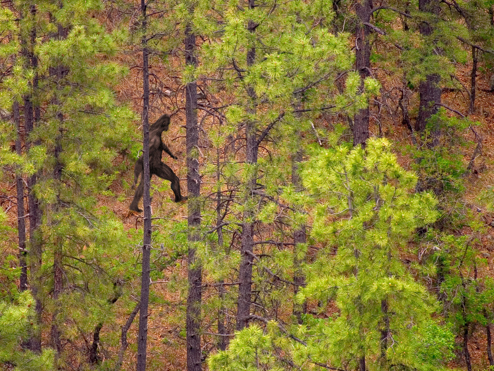

Common Locations of Bigfoot Sightings
According to data from The Bigfoot Field Researchers Organization, the most common places to run into Bigfoot are Washington state, California, and Pennsylvania. In Washington state, the best changes of finding Bigfoot are in the Blue Mountains, and Ape Canyon, where a group of miners in 1924 reported being attacked by multiple Sasquatch. California should be no surprise as a top Bigfoot destination, as that is where the name was coined. As for Pennsylvania, in the Applachian Mountain range with acres of forests, you might catch a sighting of the notorious Sasquatch there.

Other Locations
Although the three states listed above have the most Bigfoot sightings on record, the following states are also famous for their own run-ins with Bigfoot:
- Michigan: Some of the highest amounts of Bigfoot activity comes from the Seney National Wildlife Regufee in Michigan's wild Upper Peninsula.
- New York: The area near Lake George has been referred to as the "Bigfoot Capital of the East Coast."
- Ohio: The eastern side of Ohio, bordering the Appalachian Mountains, is famous for the recording of the "Ohio Howl", believed to be the call of Bigfoot.
- Oregon: Located next to hotspot Washington State, Sasquatch has been spotted near the Oregon Caves National Monument.
- Texas: Bigfoot is apparently no stranger to the Lonestar State, as East Texas, bordering Oklahoma and Louisiana, is a common area of Bigfoot sightings.